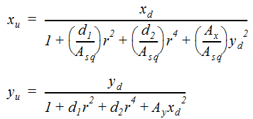

Normally, you do not need to set the Lens parameters on the Output tab, as CameraTracker does this for you, but it may be helpful to know a little about the equations CameraTracker uses to account for lens distortion. There are two modes, depending on the lens type detected:
• Spherical - compensates for different spherical lenses. This is the simpler of the two lens corrections and uses the following equation:
In normalized coordinates from the distortion center, Xu and Xd are equal to the same point in an undistorted plate and a distorted plate respectively.
d1 is equal to Radial Distortion 1.
d2 is equal to Radial Distortion 2.
r2 is equal to the distance of the point from the Distortion Center.
r4 is equal to the square of r2.
• Anamorphic - compensates for anamorphic lenses. Anamorphic correction uses three additional parameters(Ax, Ay, and Asq) and requires two equations because, unlike with spherical lenses, the amount of distortion parallel to the x-axis is not the same as that parallel to the y-axis.

In normalized coordinates from the distortion center, (xu, yu) and (xd, yd) are equal to the same point in an undistorted plate and a distorted plate respectively.
d1 is equal to Radial Distortion 1.
d2 is equal to Radial Distortion 2.
r2 is equal to the distance of the point from the Distortion Center.
r4 is equal to the square of r2.
Ax is equal to Asymmetric Distortion X.
Ay is equal to Asymmetric Distortion Y.
Asq is equal to Anamorphic Squeeze.
|
|